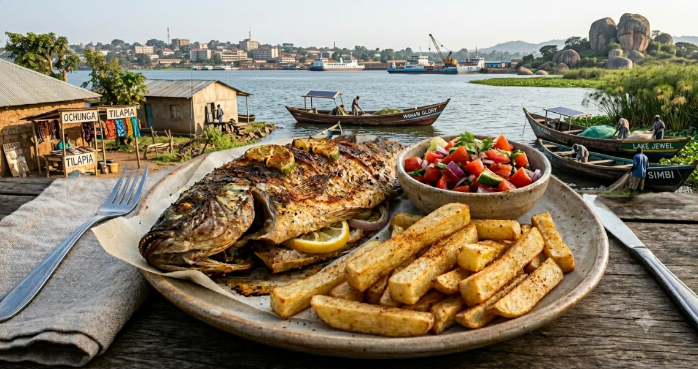

Recipe & Narrative · Road to Kisumu Series
There are certain meals that don't ask for attention, they reach out and grab it like the last slice of pizza on game night. Such meals don't land on your plate for show, they're not fancy or even always Instagram worthy, but they have gained their place with the people familiar with them. For the people that call it theirs it will always hit close to the heart. This is such a dish. Not particularly fancy, not expensive, or meant for special occasions, but rather familiar and even a staple in Luo land.
Whole tilapia, seasoned well and intentionally and then roasted until the skin tightens and becomes crispy and the flesh becomes flaky goodness. Cassava fries, the Rolls Royce of fries, crisp on the outside but soft on the inside. A side that is a little more labor intensive to prepare than regular fries, but once you taste that sweet and nutty flavor, combined with the more filling heavy feel it's easy to see why it's worth the effort, but the plate isn't complete without that palate refreshing Kachumbari. Now that's the Kisumu I look forward to seeing. This is a bridge between where I am and where I'm going. We are also preparing it without deep frying because this Road To Kisumu is also a health journey, in this series we will take traditional dishes and make healthier versions where possible, but there will be grease, there will be carbs, and that sweet tooth will receive some attention.
Back to the plate. This is the kind of food you eat with your hands and don't care who sees you. The kind that slows you down without asking you to. Meant to be enjoyed not devoured.
This is not just a recipe. It's directions to a lakeside destination, and you are all invited.
Start with the cassava.
Bring a pot of salted water to a boil and add the cut cassava. Let it cook for 8 to 10 minutes, just until it begins to soften. Not falling apart — just enough to take the edge off. Drain and let it dry completely.
Preheat your oven to 425°F.
Toss the cassava in olive oil, salt, paprika, garlic powder, and black pepper. Spread it out on a baking sheet, giving each piece space. Roast for 25 to 35 minutes, turning halfway through, until the edges crisp and color begins to deepen. If you want that extra finish, broil for a few minutes at the end.
Now the fish.
Lower the oven to 400°F.
Pat the tilapia dry and make a few diagonal cuts along each side. This is where the seasoning settles in.
Rub the fish with salt and citrus juice, inside and out.
In a small bowl, mix olive oil, garlic, paprika, cumin, and black pepper. Work this into every part of the fish — the skin, the cuts, the cavity.
Stuff the inside with sliced onion and lemon.
Place it on a lined baking tray and roast for 25 to 35 minutes, depending on size. The fish is ready when it flakes easily and the skin has tightened and slightly crisped. For a deeper finish, broil briefly at the end.
Plate the cassava fries beside the fish — no need to overthink it. Let it feel natural.
Spoon kachumbari on the side for brightness. Finish everything with a squeeze of fresh lime.
Eat slowly.
This dish doesn't need excess. It works because each part does its job — the cassava fills you, the fish grounds you, and the acidity cuts through it all. If you're building meals that matter, start here.